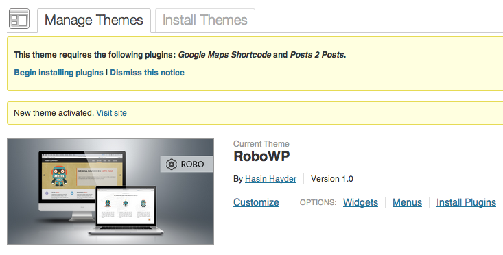
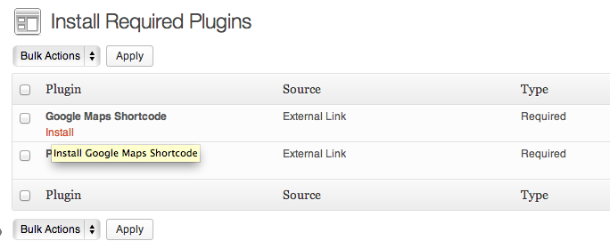
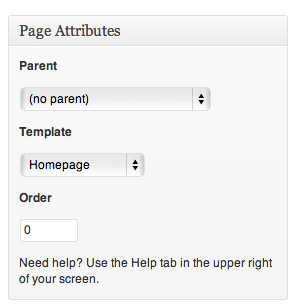
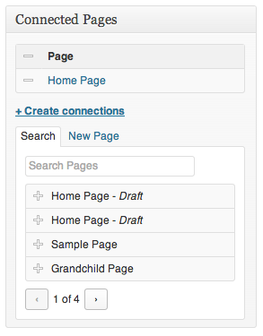
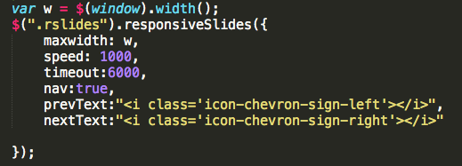
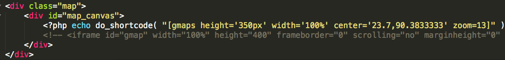

Robo
One page app landing page for WordPress
- created: 03/10/2011
- latest update: 07/22/2013
- by: Themio
- email: some@example.com
Thank you
Installing
Instaling Robo for WordPress is pretty straight forward. Just install it from Appearance->Themes->Install themes section. Robo comes with essential plugins bundled with it, so you don't need t worry about that. Once the installation is done, Robo will ask you to install two essential plugins "Google Maps Shortcode" and "Posts To Posts".
Once you activate Robo for WordPress, it will prompt you to install the essential plugins

Now click on "Begin Installing Plugins" and it will take you to the following place

Now install both of these plugins by clicking "Install" link below each one of them and you are done.
Preparing the Homepage
After installing, Robo for WordPress will show you instructions to set it up. So you need to prepare your installation to display data like it is shown in the theme demo/presentation.
- Create a new page with title "Home Page" and no content.
-
Assign "Homepage" template from the right side page templates section
 -
Now go to settings section, and select this newly created "Home Page" as front page from the "Settings->Readings" section

- Now you are done, lets add contents :)
Adding Slider
Once Robo for Wordpress is installed and activated properly, it will create a new menu named "Slider" in the left menu bar in WordPress admin panel. From there, go to "add new slider".
- Add title which will appear as slider title
- Add content in the editor which will appear as the content of the slider
- Set featured image, and it will be used as slider image.
- Save and you are done
Add as many sliders as you want this way.
Once the slider is added, please create the connection from the right side of the editor and select the "Home Page" which you created earlier

To change the delay and transition time of each slider, just open main.js and change the speed (duration of transition) and timeout (how long each slide will be shown) - both values are in milliseconds.

Adding Features
Just below the slider, there are features section and you can add upto 3 features. For this, go to Admin Panel and click on "Add New feature"
- Add title for feature title
- Add content for feature content
- Set featured image which will appear as feature thumbnail
- Save
Once the feature is added, please create the connection from the right side of the editor and select the "Home Page" which you created earlier
Adding Team Members
Just below the slider, there are "Team members" section and you can add upto 3 team members. For this, go to Admin Panel and click on "Add New Team Member"
- Add title for team member name
- Add content for team member profile content
- Set featured image which will appear as team member thumbnail
- Save
Once the member is added, please create the connection from the right side of the editor and select the "Home Page" which you created earlier
Adding Posts
You can add upto 10 posts in your Robo homepage, displayed in ascending of their time adding. Just follow these steps
- Add new post from the admn panel posts section
- Add the title which will appear as post title
- Add the content which will appear as post content
- Set featured image and it will be displayed right beside the post content as featured image
-
To set background, upload any image from the "Background" section in the right side

- Save
Once the post is added, please create the connection from the right side of the editor and select the "Home Page" which you created earlier and you are done.
Displaying Google Maps
You can display google maps just above the footer area. To edit the lat-lon coordinates, open body.php file and change the coordinates from line # 212 as shown below
